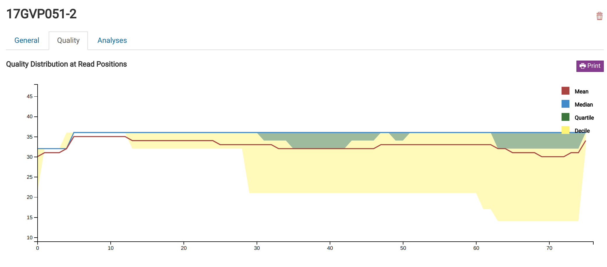
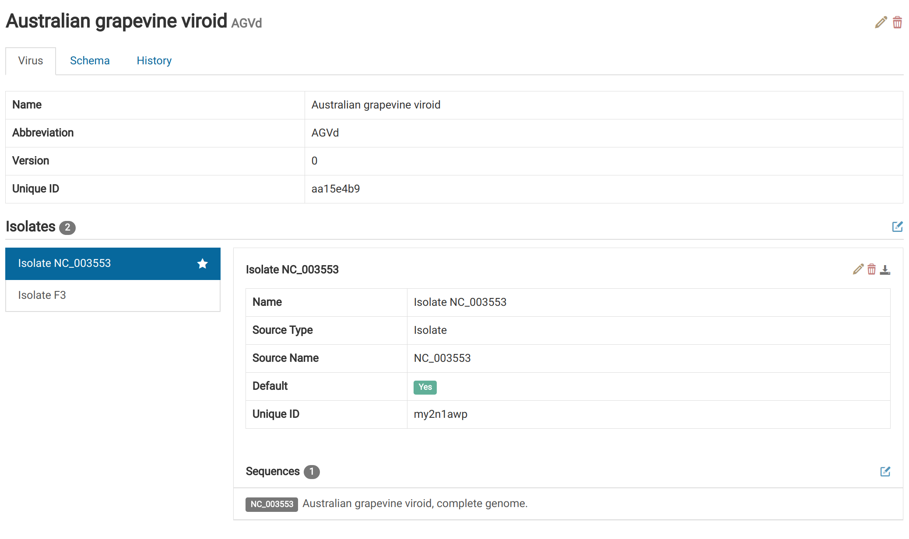
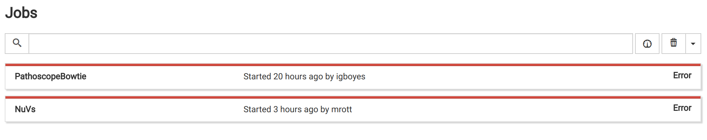
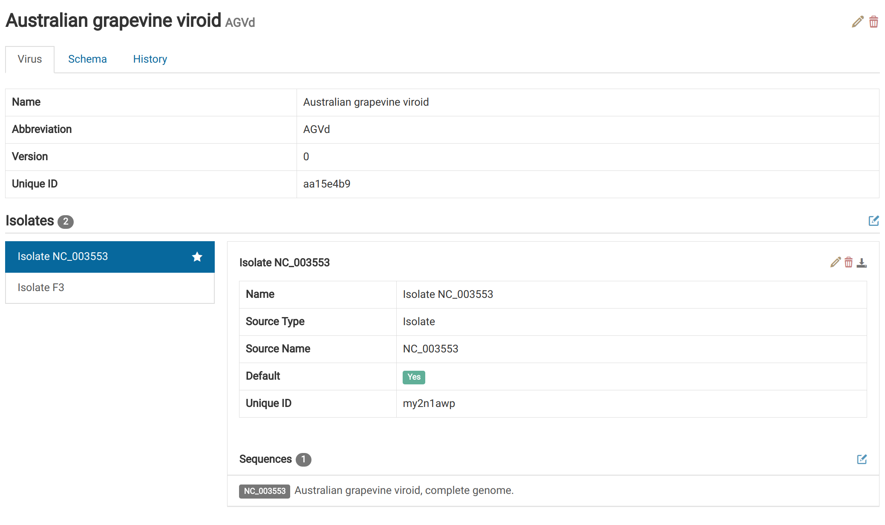
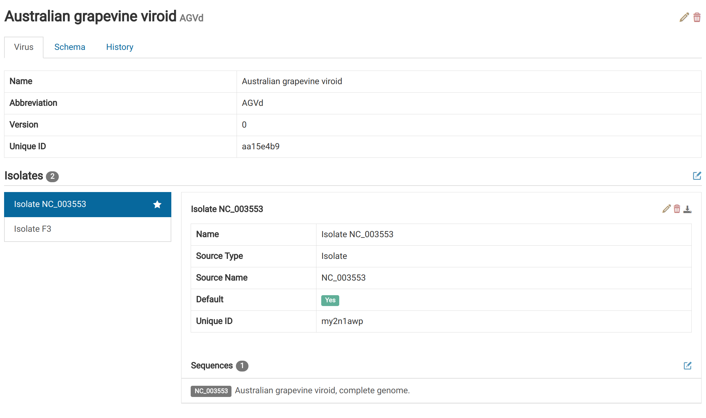

Track samples from creation to analysis. Quickly and easily search and filter sample records.
Sample Creation
Create sample records from paired and unpaired FASTQ files. Error correction, trimming, and quality
assessment is performed automatically.
Library QA
View sample quality metrics generated during import in clean, readable graphics. Graphics are familiar to
users of FastQC, the most commonly
used next-gen QC tool. Export quality graphics to PDF.

Detection of Known Viruses
Quickly assess sample libraries for the presence of viruses in Virtool's reference
database. Based on tools such as Bowtie2 and
Pathoscope.
Discovery of Novel Viruses
Use our novel analytical pipeline, NuVs, to find previously unknown viruses.
Uses SPAdes and HMMER. Inpired by
vFAM.
Virus Database
Easily browse and edit the viruses Virtool looks for in your samples. See our
official database import it into your Virtool instance.

Virus History
Track every change ever made to the virus database and revert changes not yet integrated into mapping indices.
Job Management
Manage resource-intensive tasks such as analyses or sample creation.

User Management
Create and manage users, groups, and permissions to control access.
Software Updates
Easily receive and install software updates from us.


 
